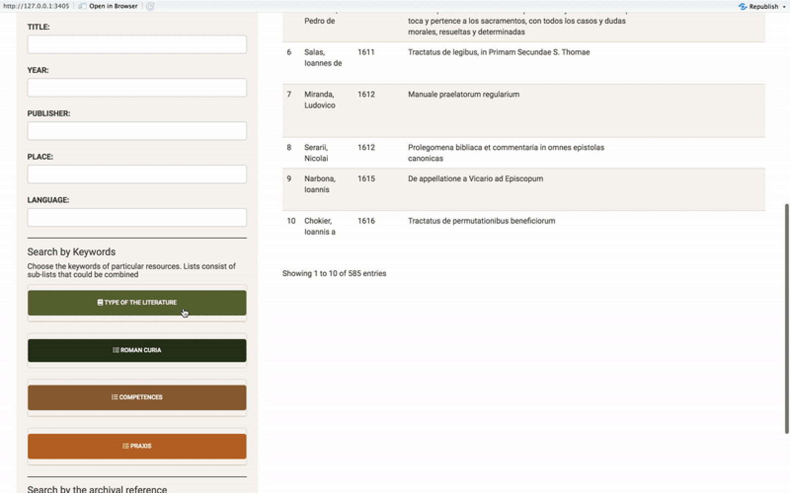
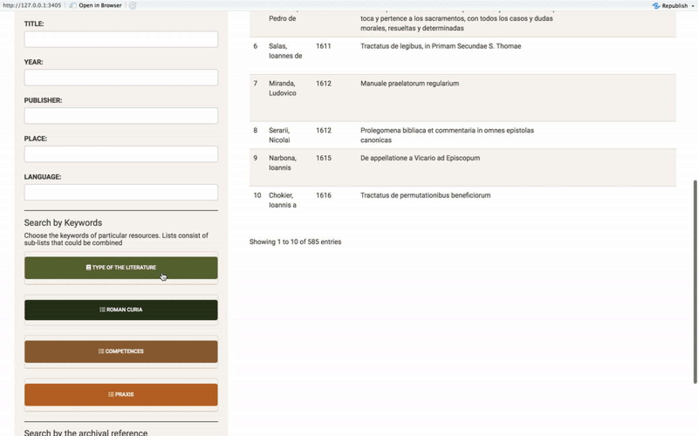
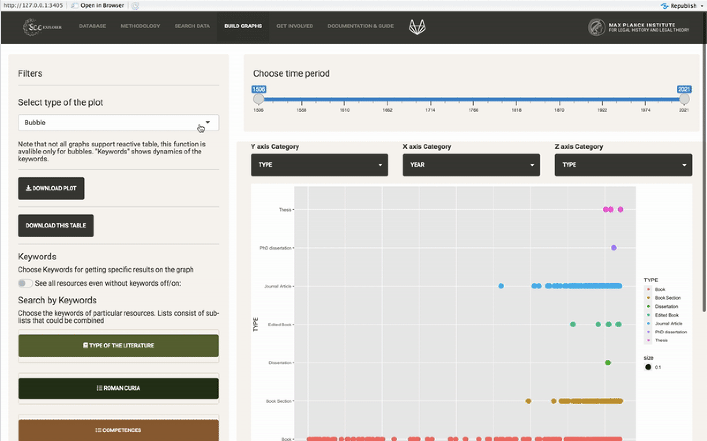
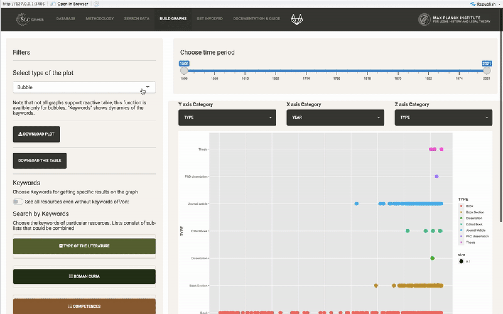

Guide
In addition to the Smart Search, the app contains graphic part, which provides an opportunity to build graphs on the basis of bibliographical datasets and keywords.
This application offers variety of searching options. Firstly, choose the basic dataset. There are two options: a raw database with all bibliographical inputs and a database with keywords. Both databases support search bars - AUTHOR, TITLE, PUBLISHER, YEAR, PLACE, LANGAUGE, and a general search bar, which proceeds a search among all columns in the dataset.
read more close
Search bars support multiple inputs, i.e. you can select 'a', 'b' (...) and combine them with other inputs in the search bars.Time slider helps to limit a period in which the search is proceeded. After setting the time period, all search bars will be updated in accordance with possible options.
 

Keywords. At this moment there are 190 keywords. By default, they all are selected. A bottom 'select all' allows to select or deselect all of them. Click on the box in order to customize the available dataset.
read more close
Results might be saved in .bib format.
 

At this moment, Filters contain options for choosing a type of the graph and keywords tree, which works in the same way as in the Smart Search. A switcher between the raw database and a database with keywords works accordingly the Smart Search.
read more close
The desk of a graphic part is interactive — dots and bars can be selected by clicking. In accordance with a selected area, all inputs will appear in the format of data table. This data table can be saved via 'Download' button.
read more close
Results might be saved in .bib format.